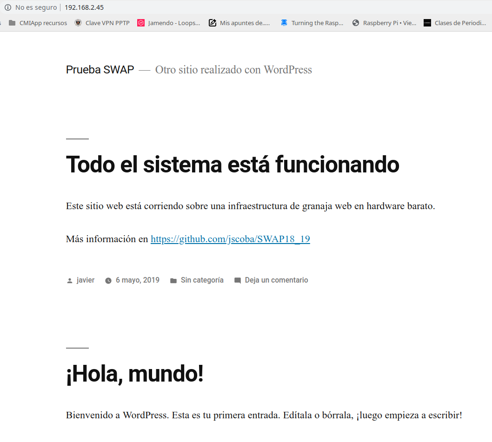

# Granja web con servidores de bajo coste
¿Granjas web? <img src="imagenes/granja_web_pro.jpg" height="50%">
Incluso un único servidor es grande, costoso y **pesado**
## ¿Es posible tener una granja web sin gastarnos el sueldo de nuestra vida?
## Por supuesto que sí ☺
<img src="imagenes/Raspi-PGB001.webp" height="50%">
<img src="imagenes/SWAP_web_farm.png" height="80%">
[granjaweb.jscoba.com](http://granjaweb.jscoba.com)

Pero no es solo eso. Una granja web que se precie tiene un sistema de...
Monitorización <img src="imagenes/zabbix.png" height="80%">
¿Preguntas?¿Comentarios? Puedes encontrarme en - Github [@jscoba](https://github.com/jscoba) - Twitter [@jscoba](https://twitter.com/jscoba) - Telegram [@jscoba](https://t.me/jscoba) - Blog [jscoba.com](https://jscoba.com) Gracias por vuestra atención